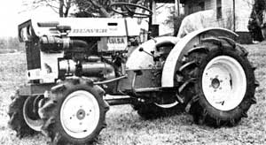
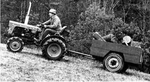
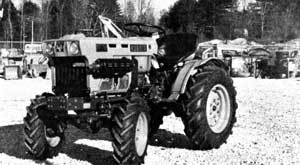
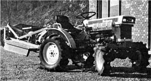

The Marvelous Diesel Mini-Tractors!
The benefits of small tractors are discussed and a comparison chart of various models is presented.
By Will Rowan
March/April 1979
A tractor is one of the most important investments that any homesteader can make. One of these sturdy, reliable "mechanical mules" will handle any job from tilling a field to yanking a fencepost, and can really ease the newcomer's transition from urban to rural life ( or help the established farmer raise the productivity of his or her acreage).
Unfortunately, such vehicles cost money . . . often a good deal more than most folks (especially those who've just made their move back to the land) are able to afford. Even a medium-sized machine, for example, can easily set its buyer back $10,000 or more . . . and that price doesn't even include the optional (but often necessary) equipment!
A few years back, however, several farsighted manufacturers realized that a different tractor market was developing . . . one that demanded equipment that wasn't in line with what the established firms were offering. In short, while the "old guard" continued to design "bigger and better" machines (which had come to resemble construction equipment rather than tractors), the industrial innovators were busy producing smaller work vehicles with diesel engines, big machine capabilities, and lower prices.
Time has, of course, proven that the "little guys" did, indeed, know what a large segment of the public wanted, and the number of manufacturers of smaller workhorses has increased to meet that demand. This year, in fact, there's a real "bumper crop" of "commonsense compacts" to choose from . . . and there may never be a better time to give the thought of purchasing a new tractor some serious consideration.
LITTLE IMMIGRANTS
As you may have guessed, these mini-machines are-for the most part-imported. In fact, tractors made in Japan alone are being sold (or will soon be available) in the U.S. under no less than 10 different company names! According to a recent issue of Implement and Tractor (the agricultural equipment dealers' official handbook), Ford-in the past few months-has signed a marketing deal with Shibaura, while John Deere has teamed up with Yanmar, International Harvester with Kumatsu, White with Iseki, and Massey Ferguson and Allis Chalmers with Toyosha! These arrangements will really "fill out" the small tractor field already represented in North America by Kubota, Satoh, Bolens, Suzue, and Hinomoto.
Even the tiniest of the Japanese diesels (which vary in size from 12 to 17 horsepower) are in no way similar to the gasoline-driven, American-made garden and lawn units so common in suburbia today. Instead, the imports are faithfully miniaturized versions of standard-sized farm machines. They have no pretense of beauty, and their outsized drag rods, links, and lifts could even be called grotesque. . . but-pound for pound-the Oriental vehicles are outstanding performers. Most are available in either two- or four-wheel drive, with six forward and two reverse speeds, hydraulic lifts, standard (1-3/8") power take-off, Category 1 three-point hitches, and many other features previously available only on bigger machines. The small diesels can-with little or no modification-even accept a good number of the implements manufactured in the U.S. for the commercial farmer!
LIKE PEAS IN A POD
The specifications for small Japanese diesel tractors-within any given horsepower grouping-read like a checklist for purebred litter-mate pups. In the accompanying table I've compared four of the four-wheel drive, 15- and 16-horse-power models that are now available in this country. As you can see in that chart, the overall dimensions and weights of these vehicles differ by only a few inches and pounds.
In addition, all four of these Japanese models have vertical, water-cooled diesel engines (the Kubota with three cylinders, the others with two). Each of the tractors also offers differential wheel locks which (when combined with their four-wheel-drive capability) makes the machines just about mireproof . . . even in that sloppy swale out behind the barn. (In fact, such vehicles are actually used in Asia to plow rice paddies before those flooded areas are planted.) Even the forward and reverse travel speeds are nearly identical from one of the four imports to another, and the small machines can creep along at just over 1/2 mile per hour (slower than many full-sized machines, and an important safety feature when working steep grades) ... or race to the barn ahead of a cloudburst at 6 to 8 miles per hour.
Of course, although the mini-diesels cost far less than full-sized machines, you still have to pay for the performance they offer . . . and there aren't any runts in this "litter" in terms of price. The four small tractors range (on the East Coast) anywhere from $4,055 to $4,295. However, off-season discounts of up to 10% were offered by some dealers in January 1979 . . . and the increased competition in this new market should encourage promotional discounts throughout the rest of the year.
THE TEST OF TIME
If you're interested in one of the new crop of imported mini's-but just a little worried about buying from a "new" firm-take heart, because all four of the manufacturers that dominated the mini-tractor market last year (Kubota, Yanmar, Satoh, and Iseki/FMC Bolens) are established Japanese firms with excellent reputations and company histories that go back as far as 90 years! Therefore, it's a safe bet that the agricultural machinery manufactured by these corporations will be part of our rural scene for a long time to come.
SMALL TRACTORS, BIG PERFORMANCE?
Last spring, when I sold off part of my land and trimmed my farming interests down to three acres of pasture and a half-acre cultivated plot, I traded my 10-year-old Massey Ferguson 135 in for a new 15-horsepower, four-wheel-drive Yanmar 155D. As you can imagine, I had a few misgivings about the deal. After all, the big Massey had built farm roads, bush-hogged acre after acre of overgrown brush, subsoiled pasture, and dragged half-ton logs out of the woods. However, since most of the heavy work around my place was long since done-and seeing as the MF-135 was in need of close to $1,000 in repairs and maintenance parts-I figured that the little machine would be a practical choice. My only real worry was about the kind of performance I could expect from the newcomer.
THE PROOF IS IN THE "PUTTING"
I soon found that the Yanmar's rear-mounted, belt-driven mower did an excellent job of cutting anything from manicured lawns to standing corn, poke-weed, or small brush. The implement's three blades are made of 3/16-inch steel, and the belt arrangement is well designed and has proven to be trouble-free. (However, when I "pushed my luck" by attaching a four-foot American-made bush hog, I found that this accessory was a mite more than the tractor could handle ... an intolerable vibration developed, and front weights became essential whenever tight turns were attempted.)
Under normal loads, though, the Yanmar has a turning radius of 7-1/4 feet. . . or 5-3/4 feet if the brake is applied to the inside wheel while maneuvering. This short are allows the tractor to mow close to trees and shrubbery, and the machine's light weight doesn't compact or scar lawns in dry weather . . . even when agricultural (rather than turf) tires are being used.
ROTOTILLING RESULTS
The Yanmar (which, as I've said, is pretty much representative of the other small imported diesels) has enough power in first or second gear (low range) to operate a 42-inch rotovator to depths of seven or eight inches . . . when used on previously cultivated soil. Two passes with this attachment in place are enough to turn corn stubble into a well-tilled bed, while unbroken fescue and clover sod-even on clay loam-can be tilled by traversing the same area three times . . . and increasing the depth of the tines with each successive pass.
That hefty 42-inch rotovator doesn't seem to strain my Yanmar, either ... or cause the excessive engine lugging and smoking that would signal an overload. I am, however, cautious by nature ... so I always try to use first gear when tilling, and have the tines turning before I lower them into the soil.
I do occasionally miss my old MF-135's automatic draft control (which keeps the rotovator's teeth at nearly the same depth regardless of the ground contour). But, when the area to be worked is fairly level, I don't find the Yanmar's lack of this feature to be a significant handicap.
GROUND SPEEDS
It seems that I use third speed (low range) and first speed (high range) on the mini more than any of the other forward gears . . . probably more out of habit than for any practical reason. My Yanmar has a rather abrupt "lurch" between these two gear ranges, which forces me to choose constantly between thrills and discretion. The other three little diesels offer a more gradual transition, however, with the Satoh proving to be the best of the bunch in this respect. (In fact. the Satoh's slower maximum forward speed is adequate for all off-road work.)
NEITHER RAIN NOR SNOW ...
Nothing short of heating the crankcase oil on the kitchen stove would get my ol' MF-135 running on a frigid winter day. But the Yanmar (as well as the other mini-diesels) has a cold-start attachment that always gets us out of the barn.
On the Yanmar, this system preheats a small quantity of fuel in the air-intake manifold . . . while the other three models have "glow plugs" mounted directly in the cylinders.
And-just to be certain of the glow-plug arrangement's ability-I drove to a nearby Kubota dealership when the mercury stood at a chilly 6°F. Sure enough, the Kubota B7100 (which had been standing out in the lot all night) fired up right away in the early morning cold.
LIFTING AND POST PULLING
My Yanmar has a lift capacity (at the lower link pins) of more than 750 pounds. However, this capability does decrease quickly when the load is placed further from the fulcrum (the point where the lower links attach to the tractor body). I've found that-using a standard boom-the lifting ability of my machine drops to about 300 pounds at a point four feet away from the link pins . . . and down to around 240 pounds when the load is seven feet out.
Unfortunately, wheel weights won't solve this problem. With 240 pounds at the end of the boom, the tractor's hydraulic innards emit anguished squeals as the burden clears the ground. The trick, of course, is to keep hefty loads as near the link pins as possible. All in all, I've found the Yanmar's "strength" to be very impressive . . . considering that the tractor itself weighs in at just over 1,100 pounds.
WOOD HAULING
I knew I was taking a chance when I traded my MF for the smaller import, because I had no idea of how large a wagonload the Yanmar would be able to pull. Furthermore, bringing in firewood is a year-round job at my farm, and our woodlot is across a creek and at the bottom of a deep draw!
You can imagine how pleased I was, then, to discover that-in four-wheel drive (low range)-my spunky vehicle could easily haul a third of a cord of hardwood up a 12-percent loamy-surfaced grade. On those rare occasions when the ground is frozen to a depth of just a fraction of an inch, the Yanmar's tires will tear through the frost and lose traction on the slick undersoil . . . but when the earth is thoroughly frozen (or completely thawed) the mini will really get its shoulders down and pull!
BLADE WORK
When plowing snow or grading, the little imports are limited by available traction more often than by a lack of power. I use a medium-weight, six-foot, rear-mount blade that I originally bought for my Massey Ferguson (the extra width over stock Yanmar equipment is an advantage when dragging or smoothing driveway gravel). The mini-machine usually grabs the ground well enough to handle this full-sized accessory, but the blade must be canted sharply when I want to dig out encroaching grass.
PROS AND CONS
Of course, there are a number of farm tasks that I wouldn't ask my 155D (or any of the other three mini-diesels) to perform, but the small workhorses have a number of advantages on their side, too. For one thing, a mini-tractor marries the maneuverability of a gasoline-powered riding mower with many "true tractor" capabilities. Maintenance on the imports is far less costly than on large diesels, too, and transporting the machines in for service can be accomplished easily. Tire repairs are particularly convenient . . . since one person can easily lift a mini-tire into the trunk of his or her family car.
Admittedly, the initial purchase price for any of these four lightweights isn't chicken feed, but few machines worth their salt are inexpensive these days. Furthermore, the mini's still cost a whole lot less than do "normal" tractors, and they can handle most of the same jobs. . . albeit on a smaller scale.
In fact, the "baby diesels" are so much fun to operate that you might want to buy two. That way, while the rest of your family's fighting over the first one, you can mosey over to the barn door and sneak off with the other!
|
 PHOTOS SUPPLIED BY THE AUTHOR |
 |
 |
|
 |
 |
|